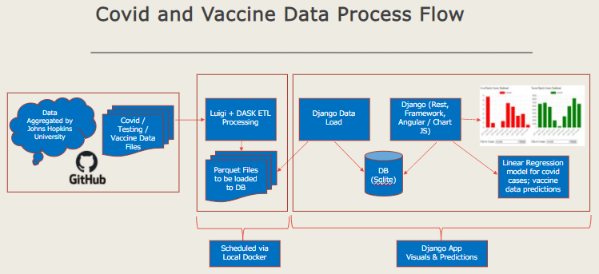

Introduction¶
Background¶
Ever since the COVID-19 pandemic erupted and disrupted our way of life, Johns Hopkins University had been gathering data and publishing them for general consumption and use. My goal is to utilize the datasets published by the University for my final project assignment.
Load CSV data from Johns Hopkins GitHub repository that is publicly accessible, process the data and persist for visualization in aggregated files or database. Finally develop data visualization for common understanding of both the virus spread and the vaccines usage.
Project Architecture¶
Project Approach¶
Load CSV Data from GitHub, look for new files -> Stream Processing
Process and load updates for both COVID-19 Cases and Administering of Vaccines
Leverage atomic writes, Relation DB for Persistent Storage
Aggregate for Data visualization and build interactive charts
Identified and leveraging several packages
Stream processing, visualization and linear regression models execution
- The following packages are leveraged through the project
pandas, environs, pyarrow, openpyxl, gitpython, luigi, django, seaborn, datashader, requests
aiohttp, djangorestframework, scikit-learn, numpy, coreapi, coreapi-cli
Benefits¶
Ability to work with live data stream, data is updated daily and hourly in some cases.
Use of advanced python packages and demonstrate extended Advanced Python learnings from this semester.
Deliver visualization solution to OSS (vaccine vs cases).